AnyPortrait > Manual > Creating a character in multiple directions
Creating a character in multiple directions
1.3.4
When creating the characters that appear in the game, depending on the game, you may need to make them face the front, the side, and the back.
This type of work is often used in top-view games as well as side-view action games.
This page covers how to use AnyPortrait to create a character that looks in multiple directions.
Please note that this description focuses on the functions and does not cover the detailed process of making animations or how to draw images.
There are two main ways to create a character with a multi-directional appearance.
The first method is to create multiple root units and convert it into a script.
Another way is to create one root unit with multiple child mesh groups and control it with a control parameter.
Each has pros and cons, so choose the one that works for you from the descriptions below.
Importing a PSD File
Before going into detail, here's how to create and import a PSD file to directly create child mesh groups or create multiple root units.
Knowing this in advance will help you prepare your PSD image and organize the mesh groups.

This is the prepared PSD file.
If you look closely, you can see the two groups where the two image layers are grouped.
When these layers are grouped and imported into AnyPortrait, the groups are converted into child mesh groups.

Let's import the PSD file into AnyPortrait.
(1) Click the Import PSD File button and open the PSD file.
(2) You can see that groups of the PSD file are recognized.
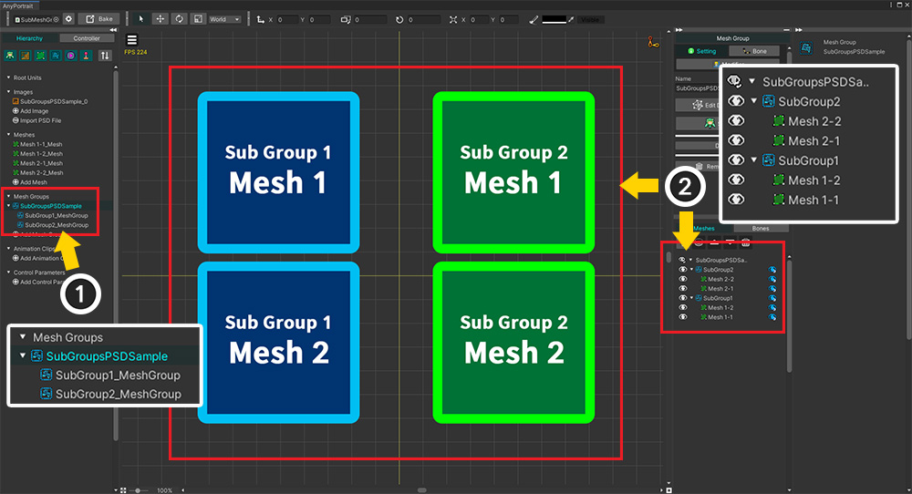
Let's finish importing the PSD file.
It is structured the same as the PSD file as above.
(1) Two child mesh groups as sub objects have been created and belong to one root mesh group.
(2) If you select the root mesh group, you can see that the meshes and child mesh groups are created and placed as well as the PSD file.
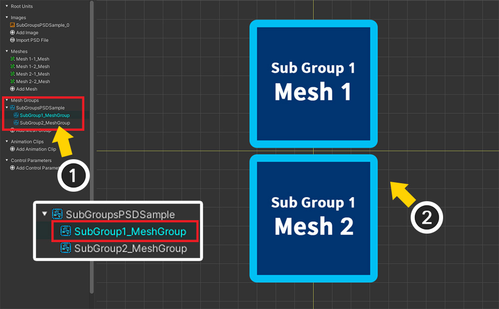
(1) If you select a child mesh group, (2) only the meshes belonging to it can be viewed and edited separately.
Using this function, you can quickly and easily compose "a character facing multiple directions" using a single PSD file.
If you want to change the configuration, check the following instructions.

Let's detach the child mesh group from the root mesh group.
(1) Select the child mesh group you want to remove.
(2) Press the Detach button.
(3) Press the Detach button in the message.

You can see the child mesh group has been detached.

In opposite, let's add a child mesh group.
(1) Press the "+" button.
(2) Click the Mesh Group tab.
(3) Select the mesh group you want to add and (4) click the Add button.
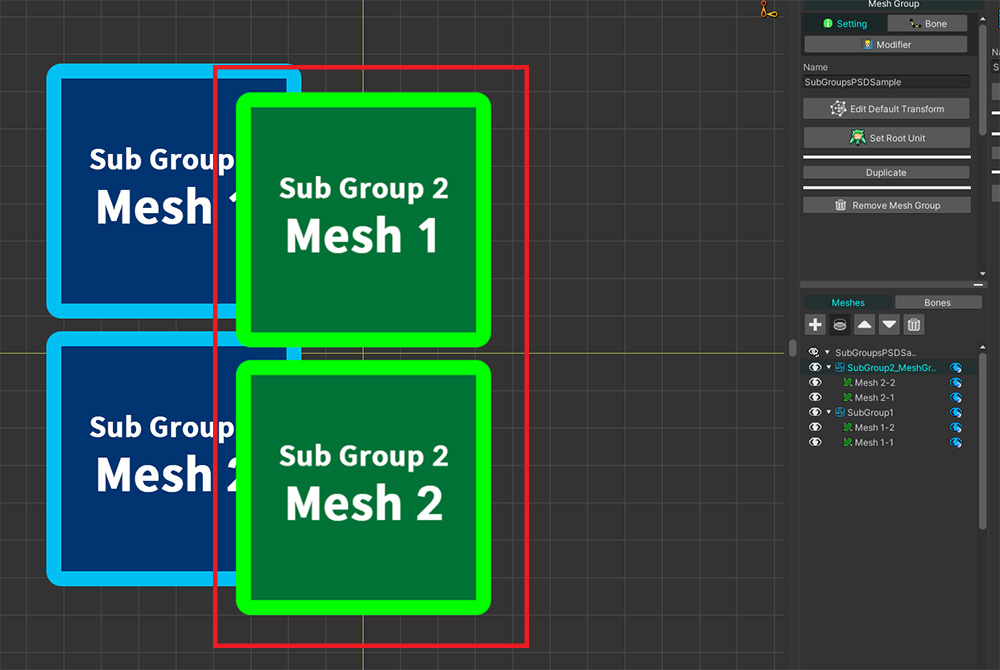
A mesh group is registered as a child mesh group.
However, in this case, the mesh group is placed at the origin.
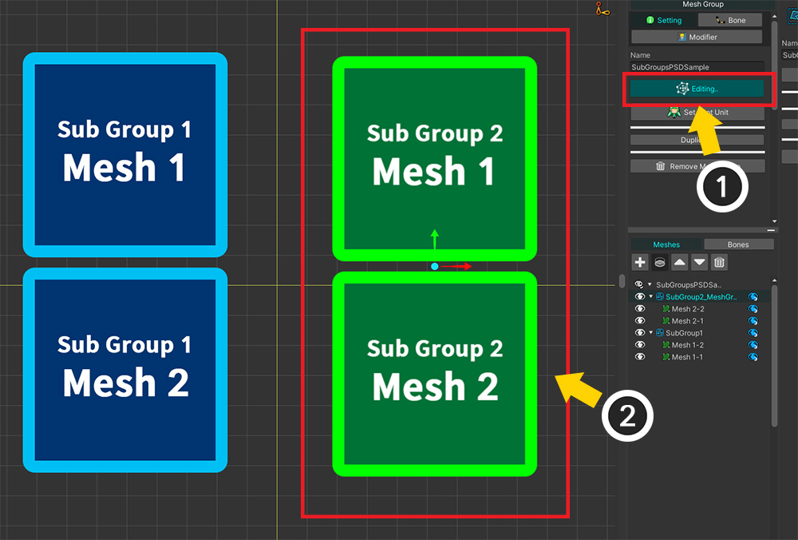
(1) Turn on the Edit Default Transform mode and (2) modify the position manually.
Method 1. Using Multiple Root Units

The first way to create a character facing multiple directions is to create root units for each direction.
Unless you're making complex animations such as switching directions in the middle of a motion, this method is pretty intuitive and easy to script.

The prepared mesh groups and root units are "Front", "Side" and "Back" as above.
Each mesh group is independent of each other.
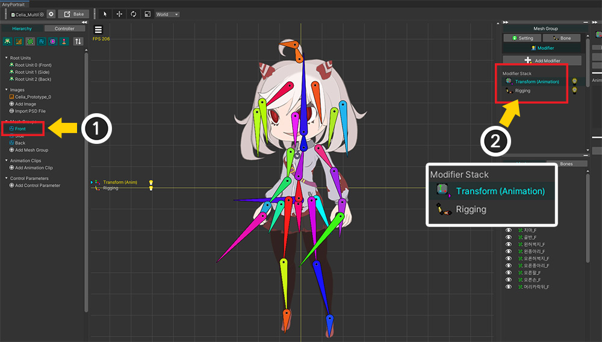
Each mesh group that becomes the root unit has bones and a "Rigging modifier" and a "Transform (Animation) modifier".

Animations are also made for each direction.
(1) Create an animation "Walk_Front" for "Front".
(2) Connect this animation to the "Front" mesh group.
(3) Make the animation for the front mesh group.


In the same way, create animations for "Side" and "Back".
Now let's write a simple script to change the direction of the character.
using UnityEngine;
using AnyPortrait;
public class MultiRootUnitController : MonoBehaviour
{
// Target AnyPortrait character
public apPortrait portrait;
void Start() { }
void Update()
{
if(Input.GetKeyDown(KeyCode.Alpha1))
{
// Press the number 1 key to play the "Front" walking animation.
portrait.Play("Walk_Front");
}
if(Input.GetKeyDown(KeyCode.Alpha2))
{
// Press the number 2 key to play the "Side" walking animation.
portrait.Play("Walk_Side");
}
if(Input.GetKeyDown(KeyCode.Alpha3))
{
// Press the number 3 key to play the "Back" walking animation.
portrait.Play("Walk_Back");
}
}
}
Looking at the script, there is no separate code to switch the root unit, just the code to play animations.
The root unit is switched according to the animation, so you can write the code really simple.

Let's put the character and the script into the Unity scene.
(1) Bake the character in the AnyPortrait editor, place it in the scene.
(2) Create a new GameObject.
(3) Add the script to the created GameObject and assign apPortrait.
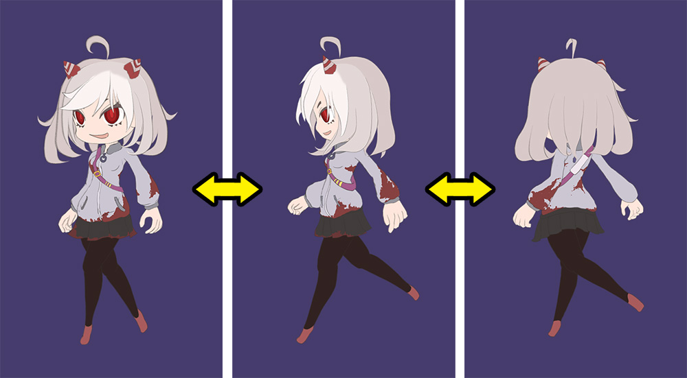
Run the game and press the number 1, 2, 3 keys as we wrote in the script to switch to the corresponding root unit and run the animation.
Using multiple root units is not much different from the existing production method, you can just write a script to play animations that match the direction of the character.
The advantage of this approach is that the workflow and scripting are easy and intuitive.
On the other hand, the disadvantage is that it is difficult to create a motion that switches directions.
If you want to create an animation that switches directions, you need to write a script to play animations for each direction in order.
With these characteristics, this method can be effectively used in top-view games.
Method 2. Using Multiple Child Mesh Groups

The second method is to add "child mesh groups" as sub objects to "the root mesh group that become the root unit".
You can make only the child mesh group that need to be rendered visible, and hide the rest of the mesh groups so that the character's direction changes.
(1) The character looks the same as the previous description, but 3 mesh groups are registered as sub objects in one mesh group.
(2) Each mesh group has independently meshes and bones, and "Rigging modifier" is applied.
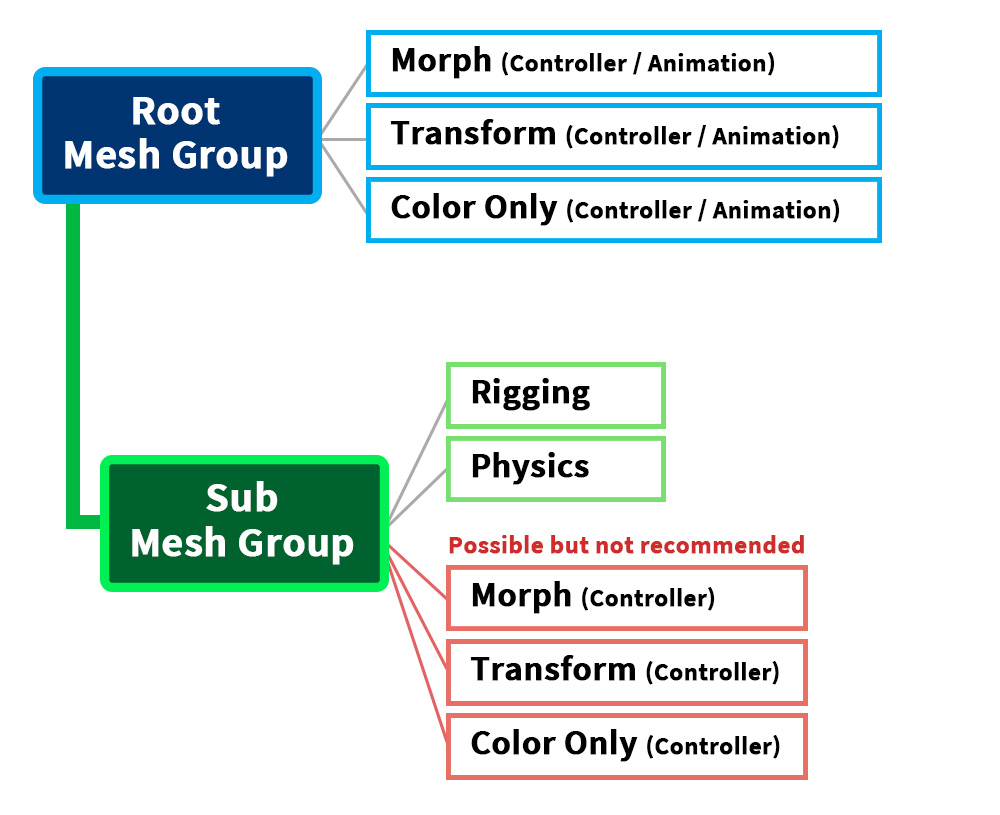
When working with creating parent-child mesh groups, you need to decide which modifier to add to which mesh group.
This is especially important if the child mesh groups each have a bone and move independently.
We recommend configuring modifiers as above.
Considering the ease of work, consistency, and performance, it is recommended to add Morph, Transform, Color Only modifiers to the root mesh group.
In particular, Animation modifiers can only be added to the root mesh group.
(If you accidentally add the Animation modifier to a child mesh group and create an animation, please refer to the related page to solve it.)
Rigging, Physics modifiers work regardless of external data (control parameters, animations), so it might be more convenient to add them to the child mesh group with bones or meshes.
Adding a Rigging modifier to the child mesh group can be convenient for you to work with, especially if the child mesh group has bones.
However, please be careful, as a problem occurs when more than one Rigging modifier is applied to the target mesh.
It is ok to add these modifiers to the parent mesh group and apply them.
It is possible to add Controller modifiers (Morph, Transform, Color Only) to a child mesh group, but we do not recommend it.
In our experience, complex registration of modifiers to parent-child mesh groups has resulted in problems with unintended movement.
Therefore, it is recommended to edit the deformation by external data consistently in the root mesh group if possible.

The most important point in this approach is to "switch the child mesh group shown using the control parameter".
This corresponds to switching the root unit by running the animation in the first way above.
(1) Add a new control parameter. We created a control parameter named "Root Pose".
(2) Set the control parameter type to Int.
(3) We set the range of values from -1 to 1, to map them to "Back: -1", "Side: 0", "Front: 1" respectively.

(1) Select the root mesh group.
(2) Select the Modifier tab and click the Add Modifier button.
(3) Select the "Color Only (Controller)" modifier and (4) press the Select button.

(1) Register 3 keys in the control parameter.
(2) Register the child mesh groups in the modifier.

Makes the visible child mesh group be changed according to the control parameter.
When the value is -1, it is set to show the "Back", "Side" is shown when it is 0, "Front" is shown when it is 1.
You can now change the direction of the character by controlling the "Root Pose" control parameter.
If you want to express the in-between motion of changing the direction of the character, please set it as follows.
- Set the control parameter type to "Float" instead of "Int".
- Use the Morph modifier instead of the Color Only modifier, and enable Color Option and Toggle Visibility without blending. (Related Page)
- Add more keys for control parameters and edit the vertices to create an intermediate appearance.
Before explaining the subsequent process, if you use multiple child mesh groups, please check the description of the following functions first.
Child mesh groups not switching when editing other modifiers
By default, when Edit Mode is turned on, other modifiers or other control parameters do not work.
So, "switching visible child mesh groups with the Root Pose control parameter" will not work.
You can force it to show by pressing the "green eye icon" in the right Hierarchy UI, but this is a temporary method, so the workflow is still cumbersome.
There are two ways to solve this problem.
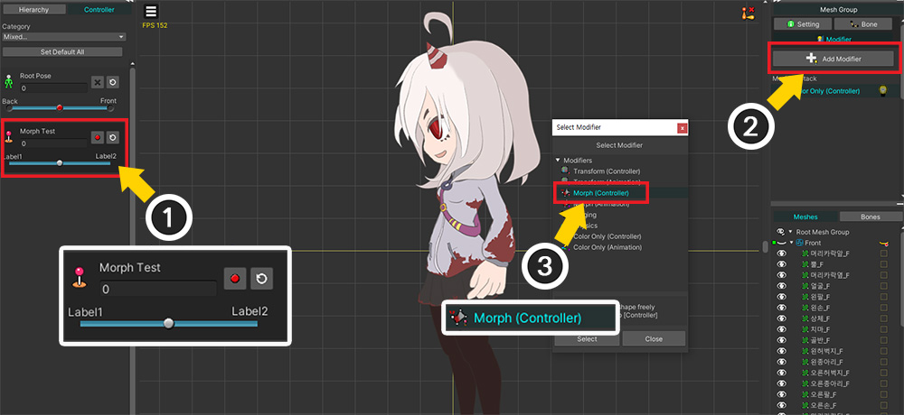
To illustrate, let's add a separate Morph modifier.
Added a new control parameter and the Morph modifier as above.
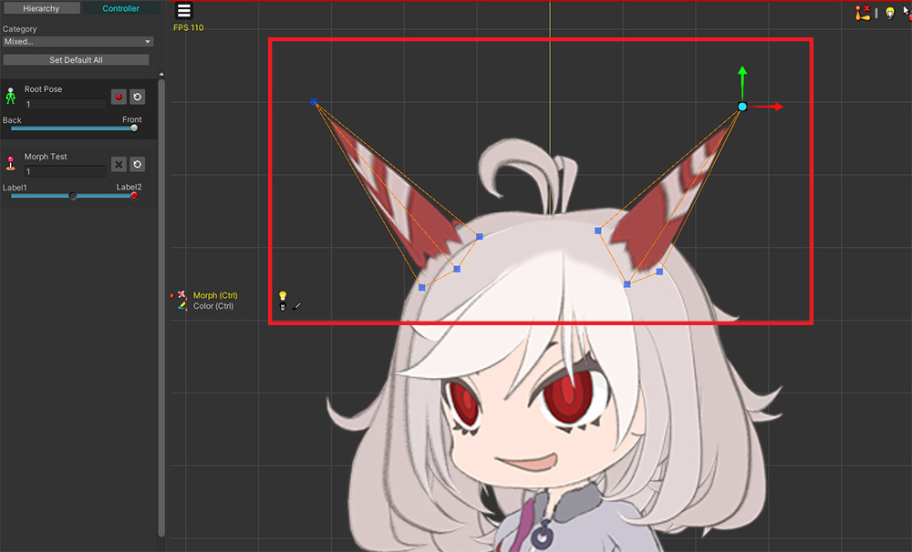
We tried changing the length of the character's horns using the Morph modifier.
First, we transformed the "horns" mesh in the "Front" mesh group.

We have finished transforming the mesh of the "Front", we want to transform the other mesh of the "Side".
(1) Change the value of the "Root Pose" control parameter to show the "Side" mesh group.
(2) However, "Front" is still shown, making it difficult to edit meshes in different directions.

(1) Turn on "View menu > Edit Mode Option > Apply Multiple Modifiers if no conflict". (Shortcut key: D )

The other modifiers now work even in edit mode, allowing you to render "Side" or "Back" according to the "Root Pose" control parameter.
(More details about the edit mode options can be found at the related page.)
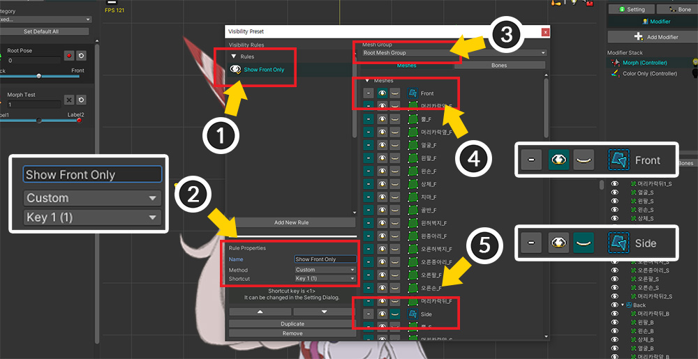
Alternatively, you can use the Visibility Preset (Related Page) to switch the child mesh groups in a force.
Open the Visibility Preset Setting through View menu > Visibility Preset > Settings.
(1) Create a new rule.
(2) Set in the Custom method and, if necessary, designate a shortcut key.
(3) Select the root mesh group.
(4) If this rule is applied, only the "Front" mesh group will be shown, so set the Front mesh group to be shown forcibly.
(5) Conversely, the "Side" and "Back" mesh groups are forced to be hidden.
Add more rules in the same way so that "Front", "Side" and "Back" are shown by each rule.
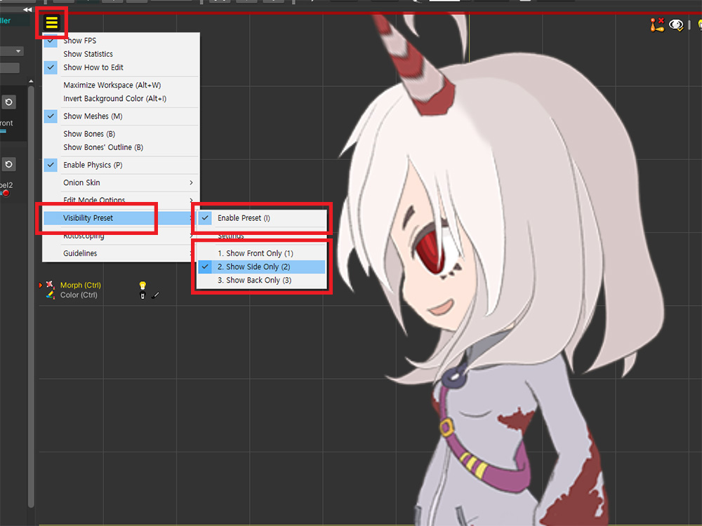
Activate View Menu > Visibility Preset > Enable Preset (shortcut: I ) and select the rule to make only the relevant mesh group visible.
If you use the shortcut set in the rule, you will be able to speed up your work.

Let's create the bone animation.
(1) Select the root mesh group and click the Add Modifier button in the Modifier tab.
(2) Select the Transform (Animation) modifier and (3) press the Select button.

(1) Add a new animation.
(2) After setting the animation a name, click the Select Mesh Group button.
(3) Mesh groups appear, you can see that child mesh groups that cannot be root units cannot be selected. Select the root mesh group.
(4) Press the Select button.
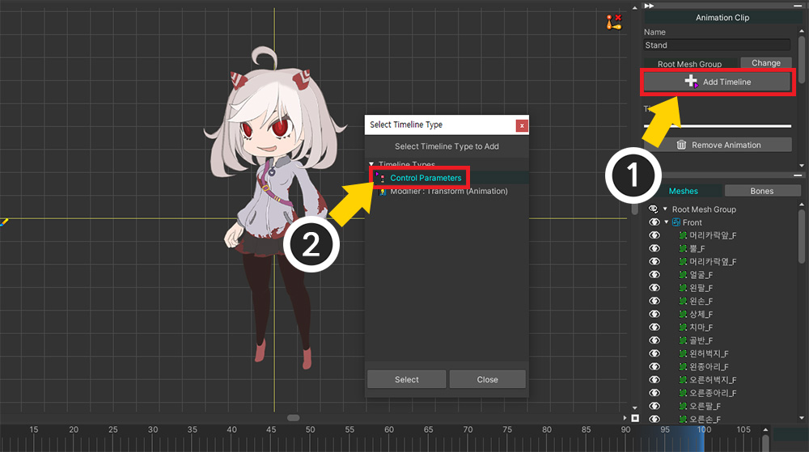
(1) Click the Add Timeline button.
(2) Add a Control Parameters timeline to switch child mesh groups.

(1) Select the added Control Parameters timeline.
(2) Select the "Root Pose" control parameter created earlier.
(3) Click the Add Timeline Layer to Edit button to register the control parameter in the timeline.
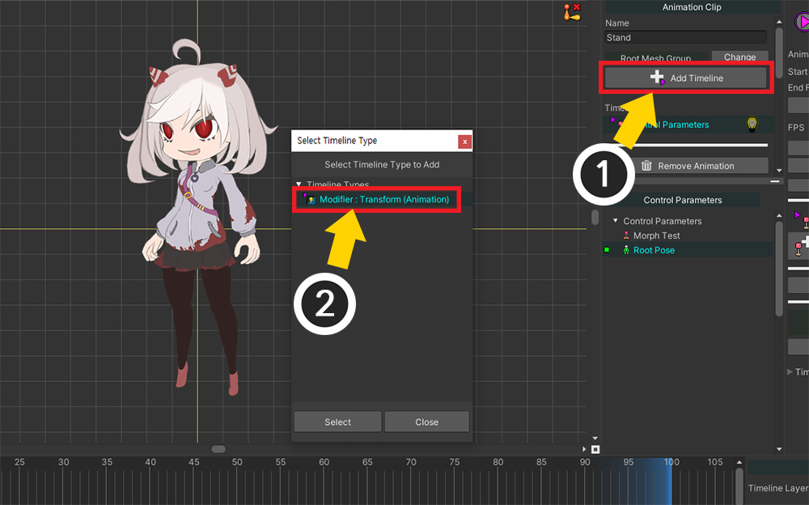
(1) Click the Add Timeline button again.
(2) To create a bone animation, select Modifier: Transform (Animation) and add it.

(1) Select the added Transform (Animation) timeline.
(2) Select the Bones tab.
(3) Click the All Bones to Layers button.
(4) Click the Okay button in the message to register all bones in the timeline.
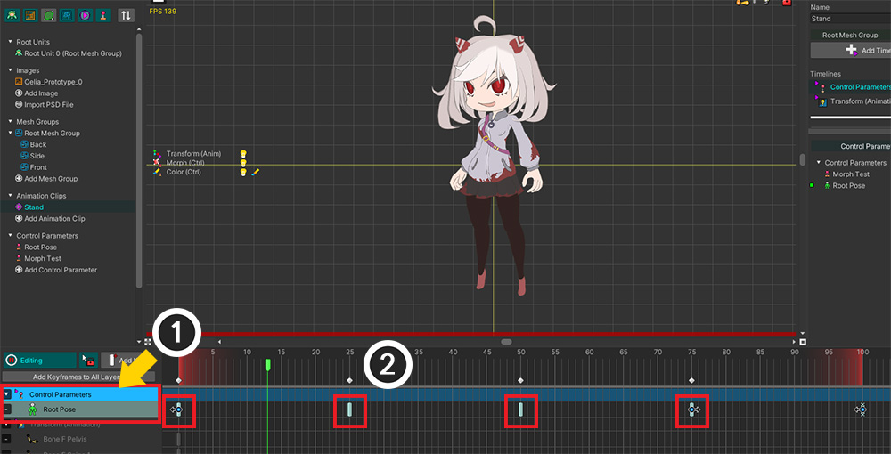
Now let's make the bone animation.
Before making the bone animation, let's set keyframes to show or hide the child mesh group, i.e. the direction of the character.
(Depending on your style, you may be able to edit the visibility of the mesh group and the bone animation at the same time, contrary to the description on this page.)
(1) Turn on the Edit mode, and select “Root Pose” in the Control Parameters timeline.
(2) Add keyframes.
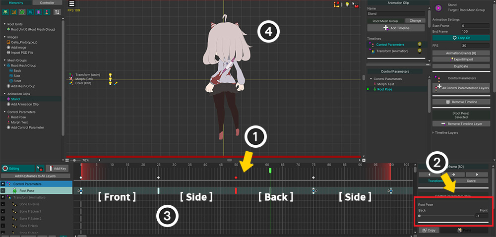
(1) Select Keyframe and (2) specify the value of the control parameter.
(3) As above, we set a keyframe so that "Front > Side > Back > Side" is displayed repeatedly.
(4) If you play the animation, you can see that the direction of the character changes according to the value of "Root Pose" in the workspace.

The next step is to create a bone animation.
(1) Select the Transform (Animation) timeline and turn on the Edit mode.
(2) However, in this state, the "Root Pose" control parameter is not applied, so all mesh groups are displayed in the workspace.
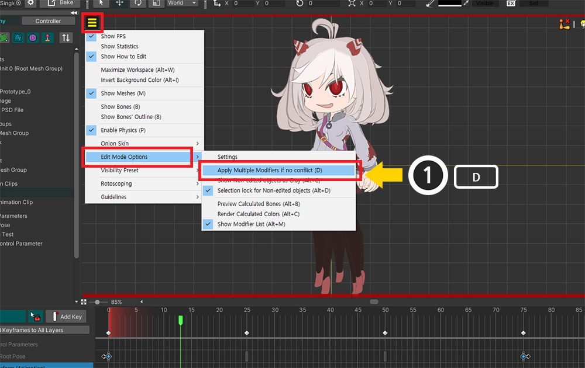
The method described earlier on this page solves this problem.
(1) Enable View Menu > Edit Mode Options > Apply Multiple Modifiers if no conflict (shortcut: D ).

Now the timeline that is not currently being edited works, so only child mesh groups that fit the current state are shown in the workspace.

Currently, the bones are set to not be visible in the workspace.
Let's make the bones visible by pressing the B button or by turning on the View menu > Show Bones.
However, all bones are shown independently of the rendering state of the child mesh groups.
Too many bones are cluttered up in the workspace, making it difficult to edit.

Let's use Visibility Preset.
(1) Select View menu > Visibility Preset > Settings.
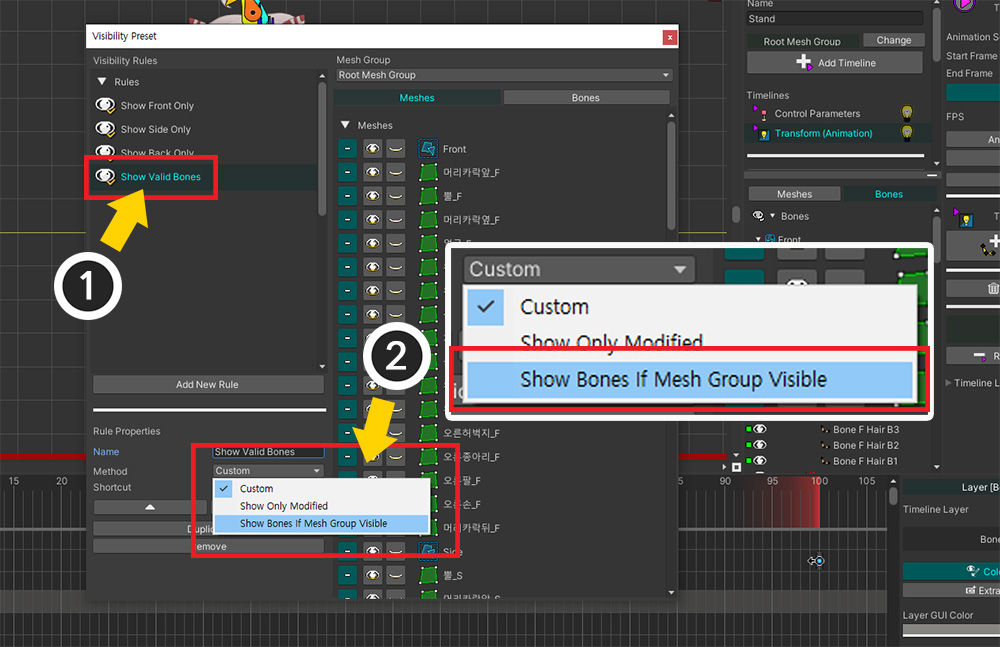
(1) Add a new rule.
(2) Set the method of this rule to "Show Bones If Mesh Group Visible".
This option causes the bones to be rendered in the workspace only when the mesh group they belong to is rendered.

Apply the created rule.
(1) Select the created rule in View menu > Visible Preset and (2) click Enable Preset to activate it. (Shortcut key: I )
(3) When the animation is played, only the bones for the child mesh group that are visible are shown in the workspace.
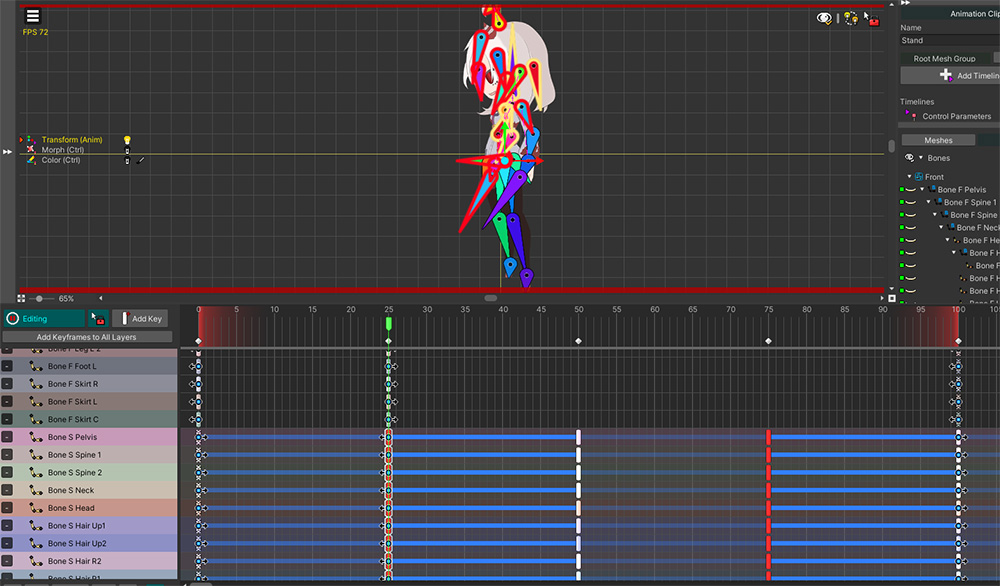
Now that everything is ready, it's time to create the bone animation.
Within an animation clip, you can create motion to make a character move while changing direction.
This process will be different depending on what motion your character has and how you animate it.
Even so, the following explanations will help you as you create motions.
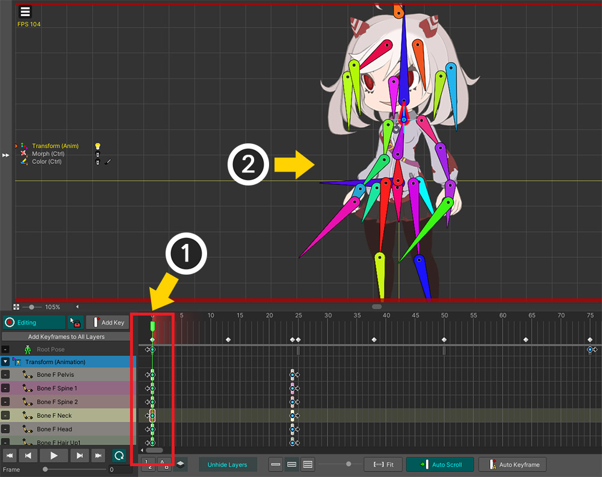
(1) Select the Transform timeline and timeline layers, create keyframes, and (2) modify the character's pose.
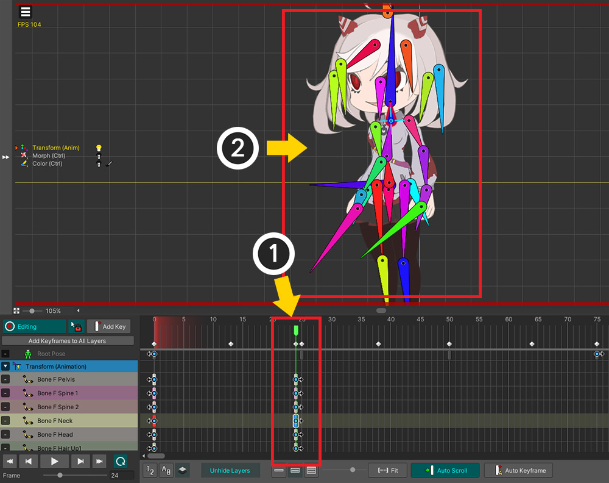
(1) Create keyframes just before the character's direction changes.
(2) Modify the pose as closely as possible to the next pose of the character.
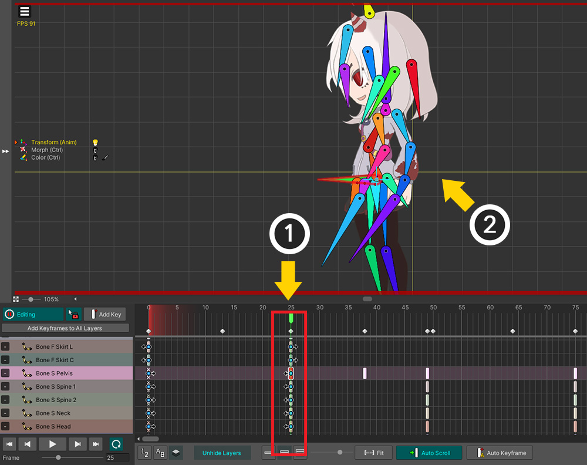
When the character's direction changes by moving to the next frame, the smaller the difference in pose from the previous frame, the more natural the animation.
If the positions of the last keyframes in the previous character direction and the first keyframes in the next direction are the same, the transition will be more natural.

By combining the bone animation and the control parameters, we created an animation that looks like a character rotating as above.
If you add more keyframes, Morph modifier, and proper character images suitable for rotation, you will be able to create a much higher quality work.
Setting the control parameters and poses so that the character's direction transitions naturally takes a lot of know-how.
In addition to our description of the features, try creating your own animations to gain a lot of experience and create great creations.

Let's check the finished character animation in the Unity scene.
(1) On the screen where the root unit is selected, select Animation Clip and activate Auto Play to make the animation play automatically.
(2) Execute Bake.

You should see the finished animation playing in the Unity scene.
The way to use multiple child mesh groups is to edit many objects at the same time as shown in the description.
The inevitable cons are that the workflow is rather difficult and there are a lot of things that need to be set up.
However, overcoming these difficulties has a huge advantage in being able to represent a change in character direction within a single animation.
This is a good technique for creating complex motions in side-view action games, such as characters running, fighting, jumping and turning around.
Check the currently visible child mesh group
When a character's direction changes in the game, it may require processing, such as changing the image of an equipped item.
For this case, we will explain the necessary settings and script examples.
On this page, let's write a script that checks the value of "Root Pose", a control parameter that changes the character's direction, in real time.
using UnityEngine;
using AnyPortrait;
public class GetRootPoseScript : MonoBehaviour
{
public apPortrait portrait;
// Root Pose Control Parameter Variable
private apControlParam rootPose;
// The name of the current character direction to check in the GUI
private string poseName = "";
void Start()
{
// Get the Root Pose control parameter and store it as a variable.
rootPose = portrait.GetControlParam("Root Pose");
}
// Checking the value should be LateUpdate, not Update.
void LateUpdate()
{
// Check the value of the current control parameter. Since the Root Pose was of type Int, it gets an Int value.
int currentPose = rootPose.IntValue;
// Stores the character direction assigned to the value of the control parameter as a string.
switch (currentPose)
{
case -1: poseName = "Back"; break;
case 0: poseName = "Side"; break;
case 1: poseName = "Front"; break;
}
}
private void OnGUI()
{
// The direction of the character stored as a string is displayed on the Unity screen.
GUI.Label(new Rect(10, 10, 500, 20), "Current Pose : " + poseName);
}
}
If you look at the script above, you can see that the value of the control parameter is checked in LateUpdate rather than Update.
This is because the update of AnyPortrait operates in LateUpdate, not Update.
This is because it is designed to run after other scripts have finished processing.
(This is the same reason Unity's animation works later than scripts.)
Therefore, if you want to check the value immediately after update of AnyPortrait, you need to write the code to work in LateUpdate.

(1) Return to the Unity scene, and create a New GameObject.
(2) Add a script and assign a character to the apPortrait variable.

There is an additional process that needs to be set.
Even if the code is executed in LateUpdate, the script may be executed before the update of AnyPortrait according to "Script invocation order".
So you also need to modify "Script Execution Order" to run later than AnyPortrait update.
(You can also check this in the related page.)
(1) In Unity settings, select Project Settings > Script Execution Order.
(2) Add the created script and change the order to be executed later than Default Time.
(3) Click the Apply button.

When you run the game, you can see that the script recognizes the direction of the character and outputs it to the screen.